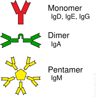
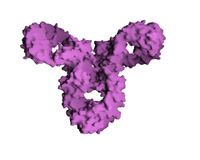

IgA
* Định nghĩa:
+ Immunoglobuline A
+ Các dạng globulin miễn dịch khác: IgD, IgE, IgG, IgM
Immunoglobulin A (IgA) is an antibody and, in its secretory form, is the main immunoglobulin found in mucous secretions, including tears, saliva, colostrum, intestinal juice, vaginal fluid and secretions from the prostate and respiratory epithelium. It is also found in small amounts in blood. Because it is resistant to degradation by enzymes, secretory IgA can survive in harsh environments such as the digestive and respiratory tracts, to provide protection against microbes that multiply in body secretions.
Immunoglobulin D (IgD) is an antibody isotype that makes up about 1% of proteins in the plasma membranes of immature B-lymphocytes where it is usually coexpressed with another cell surface antibody called IgM. IgD is also produced in a secreted form that is found in very small amounts in blood serum. Secreted IgD is produced as a monomeric antibody with two heavy chains of the delta (δ) class, and two Ig light chains

In biology, Immunoglobulin E (IgE) is a class of antibody (or immunoglobulin "isotype") that has only been found in mammals. It plays an important role in allergy, and is especially associated with type 1 hypersensitivity. IgE has also been implicated in immune system responses to some parasitic worms like Schistosoma mansoni and Trichinella spiralis, and may be important during immune defense against certain protozoan parasites such as Plasmodium falciparum
Immunoglobulin G(IgG) is a monomeric immunoglobulin, built of two heavy chains γ and two light chains. Each molecule has two antigen binding sites. This is the most abundant immunoglobulin and is approximately equally distributed in blood and in tissue liquids, constituting 75% of serum immunoglobulins in humans. In birds, IgG is often called IgY, and is found in serum and yolk.
